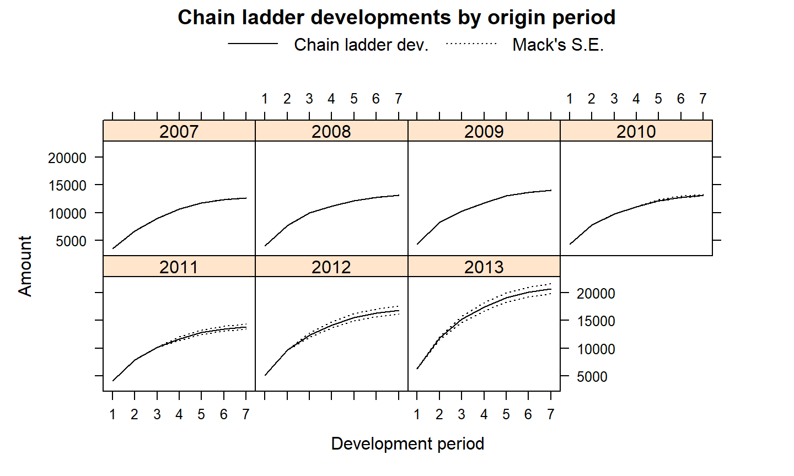
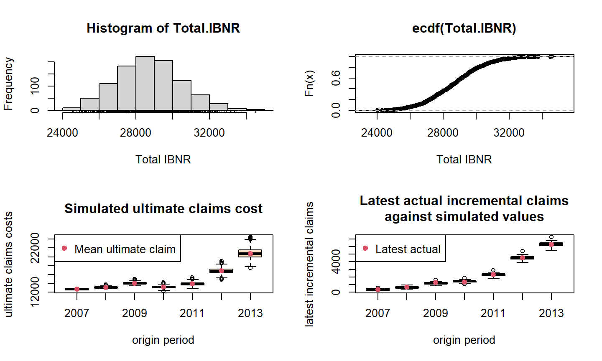

Métodos estocásticos para cálculo de reserva
Chain-Ladder como Regressão Linear
Método Mack
Modelo de Regressão de Poisson
Modelo Quasi-Poisson
Bootstrap Chain-Ladder
16 de junho de 2023
Aula de Hoje
Cálculo de Reserva
Vimos na aula passada que o cálculo de reservas para seguros do ramo não-vida é baseado na análise de dados históricos.
Além disso, na operação dos pagamentos de indenizações observamos um período de desenvolvimento: tempo entre a ocorrência de um sinistro e a efetivação do pagamento pela seguradora.
Por isso é importante criar reservas e provisões para pagar as indenizações de eventos que já ocorreram mas ainda não foram avisados/pagos.
Cálculo de Reserva
O método mais básico para calcular reservas é o Chain-Ladder. É um método determinístico baseado em triângulos de desenvolvimento, que assume que os fatores de desenvolvimento são os mesmos para todos os anos.
Como as provisões representam uma grande parte do passivo da seguradora, é importante estimar bem não só o seu valor esperado, mas também a variabilidade da reserva.
Por isso, vamos ver como estimar a reserva através de métodos estocásticos.
Métodos estocásticos para cálculo de reserva
Métodos estocásticos para cálculo de reserva
Vários métodos tem sido desenvolvidos para estimar reservas através de uma abordagem estocástica.
A ideia principal é tratar os dados observados como uma realização de uma variável aleatória.
Os modelos estatísticos permitem fazer testes de hipóteses, avaliar suposições de distribuição, e monitorar a diferença entre os valores de desenvolvimento reais e os esperados.
Vamos ver alguns modelos que estendem o método Chain-Ladder, e depois outras alternativas.
Chain-Ladder como Regressão Linear
Alguns autores propuseram considerar os fatores de desenvolvimento do método clássico Chain-Ladder como coeficientes de uma regressão passando pela origem.
Seja \(C_{\cdot,\,k}\) a \(k\)-ésima coluna do triângulo acumulado.
Chain-Ladder como Regressão Linear
Chain-Ladder como Regressão Linear
- Podemos ver o algoritmo Chain-Ladder como:
\[C_{\cdot,\,k+1} = f_k.C_{\cdot,\,k} + \varepsilon_k \quad \mbox{com}\quad \varepsilon_k \sim N\left(0, \sigma^2_k\,. {C}^{\delta}_{\cdot,\,k} \right) \] - O parâmetro \(f_k\) descreve a inclinação da reta passando pela origem dos pontos \([C_{\cdot,\,k}, C_{\cdot,\, k+1}]\), e \(\delta\) como parâmetro de ponderação.
- \(\delta=0\): regressão usual com intercepto 0;
- \(\delta=1\): chain ladder com razões ano a ano;
- \(\delta=2\): médias das razões individuais.
Chain-Ladder como Regressão Linear
Vamos ilustrar esses diferentes modelos com os dados da última aula.
Primeiro, vamos acrescentar colunas aos dados originais para que os pagamentos do período corrente e o seguinte estejam lado a lado. Vamos acrescentar também uma coluna com o período de desenvolvimento como fator.
names(Claims)[3:4] <- c("inc.paid.k", "cum.paid.k")
ids <- with(Claims, cbind(originf, dev))
## acrescentando os pagamentos do período k+1
Claims <- within(Claims,{
cum.paid.kp1 <- cbind(cum.triangle[,-1], NA)[ids]
inc.paid.kp1 <- cbind(inc.triangle[,-1], NA)[ids]
devf <- factor(dev)
})
Chain-Ladder como Regressão Linear
head(Claims)
## originf dev inc.paid.k cum.paid.k devf inc.paid.kp1 cum.paid.kp1 ## 1 2007 1 3511 3511 1 3215 6726 ## 2 2007 2 3215 6726 2 2266 8992 ## 3 2007 3 2266 8992 3 1712 10704 ## 4 2007 4 1712 10704 4 1059 11763 ## 5 2007 5 1059 11763 5 587 12350 ## 6 2007 6 587 12350 6 340 12690
tail(Claims)
## originf dev inc.paid.k cum.paid.k devf inc.paid.kp1 cum.paid.kp1 ## 23 2011 1 4150 4150 1 3747 7897 ## 24 2011 2 3747 7897 2 2320 10217 ## 25 2011 3 2320 10217 3 NA NA ## 26 2012 1 5102 5102 1 4548 9650 ## 27 2012 2 4548 9650 2 NA NA ## 28 2013 1 6283 6283 1 NA NA
Chain-Ladder como Regressão Linear
- Agora vamos aplicar o modelo de regressão para cada período de desenvolvimento, para os diferentes parâmetros de ponderação.
## modelos de regressão Chain Ladder
delta <- 0:2
ATA <- sapply(delta, function(d)
coef(lm(cum.paid.kp1 ~ 0 + cum.paid.k : devf, weights=1/cum.paid.k^d, data=Claims))
)
dimnames(ATA)[[2]] <- paste("Delta = ", delta)
Chain-Ladder como Regressão Linear
ATA
## Delta = 0 Delta = 1 Delta = 2 ## cum.paid.k:devf1 1.888217 1.889234 1.890427 ## cum.paid.k:devf2 1.280424 1.282381 1.284454 ## cum.paid.k:devf3 1.146169 1.147105 1.148104 ## cum.paid.k:devf4 1.096888 1.096758 1.096636 ## cum.paid.k:devf5 1.050936 1.050921 1.050906 ## cum.paid.k:devf6 1.027530 1.027530 1.027530
- Os coeficientes coincidem com os que já tínhamos estimado com o modelo básico.

Método Mack
Método Mack
Mack (1993, 1999) propôs um modelo para estimar a média e o desvio-padrão da previsão do Chain-Ladder, sem precisar assumir nenhuma distribuição de probabilidade.
Esse modelo é válido sob três condições:
\(\mathbb{E}(F_{ik}| C_{i,1},\dots,C_{i,k}) = f_k\) com \(F_{i,k} = \frac{C_{i,k+1}}{C_{i,k}}\);
\(Var(F_{i,k}|C_{i,1},\dots,C_{i,k}) = \frac{\sigma^2}{w_{ik}.\,C_{ik}^{\alpha}}\);
\(\{C_{i,1},\dots,C_{i,n}\},\{C_{j,1},\dots,C_{j,n}\}\) são independentes para \(i\neq j\);
com \(w_{ik} \in [0;1]\), \(\alpha \in \{0,1,2\}\) sendo que \(\alpha=2-\delta\).
Método Mack
O modelo Mack assume que os fatores para cada período de desenvolvimento são constantes para todos os períodos de origem (condição 1), que a volatilidade decresce à medida que os pagamentos são feitos (condição 2), e todos os períodos de origem são independentes e não há mudança estrutural ou sazonalidade (condição 3).
Se essas condições são válidas, o modelo fornece um estimador não-enviesado para os pagamentos futuros. \(\hat{f}_k\) é um estimador não viciado para \(f_k\):
\[\hat{f}_k = \frac{\sum_{i=1}^{n-k} w_{ik}\,. C^{\alpha}_{i,k} \,. F_{i,k}}{\sum_{i=1}^{n-k} w_{ik} \,. C^{\alpha}_{i,k} } \]
Método Mack
- Assim, um estimador não-enviesado para \(\mathbb{E}(C_{i,k}|C_{i,1},\dots,C_{i,n-i+1})\) é:
\[\hat{C}_{i,k} = \hat{f}_{n-i} \cdot \hat{f}_{n-i+1} \cdots \hat{f}_{k-2} \cdot \left( \hat{f}_{k-1} - 1\right) \cdot C_{i, n-i+1} \]
- Se \(\alpha=1\) e \(w_{i,k}=1\), então:
\[\hat{\sigma}^2_k = \frac{1}{n-k-1} \sum_{i=1}^{n-k} \left( F_{i,k} - \hat{f}_k \right)^2 \cdot C_{i,k} \]
é um estimador não-enviesado para \(\sigma^2_k\).
Método Mack
Na Seção 16.4.2, temos outras fórmulas para estimar o erro médio quadrático da reserva estimada, e outros termos.
Essas fórmulas estão implementadas no pacote
ChainLaddercom a funçãoMackChainLadder. Para ver mais detalhes sobre a implementação, veja a descrição da função.
(mack <- MackChainLadder(cum.triangle, weights=1, alpha=1, est.sigma="Mack"))
## MackChainLadder(Triangle = cum.triangle, weights = 1, alpha = 1, ## est.sigma = "Mack") ## ## Latest Dev.To.Date Ultimate IBNR Mack.S.E CV(IBNR) ## 2007 12,690 1.000 12,690 0 0.00 NaN ## 2008 12,746 0.973 13,097 351 3.62 0.0103 ## 2009 12,993 0.926 14,031 1,038 22.90 0.0221 ## 2010 11,093 0.844 13,138 2,045 141.98 0.0694 ## 2011 10,217 0.736 13,880 3,663 426.70 0.1165 ## 2012 9,650 0.574 16,812 7,162 692.39 0.0967 ## 2013 6,283 0.304 20,680 14,397 900.58 0.0626 ## ## Totals ## Latest: 75,672.00 ## Dev: 0.73 ## Ultimate: 104,327.77 ## IBNR: 28,655.77 ## Mack.S.E 1,417.27 ## CV(IBNR): 0.05
Método Mack
A saída da função fornece várias estatísticas do modelo Mack, como a previsão dos pagamentos futuros (IBNR) e o erro quadrático médio, para cada período de origem e também o total.
A saída também inclui o CV (Coeficiente de Variação \(\sigma/\mu\)), que mede a porcentagem do erro médio em relação à reserva estimada.

Método Mack
Modelo de Regressão de Poisson
Modelo de Regressão de Poisson
Alguns autores examinaram a possibilidade de tratar os pagamentos incrementais como variáveis aleatórias de Poisson, o que resulta na mesma previsão que o método de Chain-Ladder.
A ideia é considerar que os pagamentos incrementais \(X_{ij}\) tem distribuição de Poisson, dado o período de origem \(a_i\), período de desenvolvimento \(b_j\), com intercepto \(c\) e restrições \(a_1=0,\, b_1=0\):
\[\log \mathbb{E}(X_{ij}) = \eta_{ij} = c + a_i + b_j \]
Modelo de Regressão de Poisson
- O modelo de Poisson pode ser implementado diretamente com a função
glm:
## Modelo de Regressão de Poisson
preg <- glm(inc.paid.k ~ originf + devf,
data=Claims, family=poisson(link = "log"))
## ## Call: ## glm(formula = inc.paid.k ~ originf + devf, family = poisson(link = "log"), ## data = Claims) ## ## Deviance Residuals: ## Min 1Q Median 3Q Max ## -7.0570 -1.7757 0.0356 1.6751 8.7764 ## ## Coefficients: ## Estimate Std. Error z value Pr(>|z|) ## (Intercept) 8.257254 0.010638 776.175 < 2e-16 *** ## originf2008 0.031561 0.012626 2.500 0.01243 * ## originf2009 0.100422 0.012648 7.940 2.02e-15 *** ## originf2010 0.034684 0.013258 2.616 0.00889 ** ## originf2011 0.089664 0.013667 6.561 5.36e-11 *** ## originf2012 0.281288 0.014081 19.976 < 2e-16 *** ## originf2013 0.488349 0.016503 29.592 < 2e-16 *** ## devf2 -0.117395 0.009143 -12.840 < 2e-16 *** ## devf3 -0.628325 0.011700 -53.701 < 2e-16 *** ## devf4 -1.031719 0.014977 -68.886 < 2e-16 *** ## devf5 -1.313412 0.019097 -68.775 < 2e-16 *** ## devf6 -1.862984 0.029907 -62.293 < 2e-16 *** ## devf7 -2.428308 0.055266 -43.938 < 2e-16 *** ## --- ## Signif. codes: 0 '***' 0.001 '**' 0.01 '*' 0.05 '.' 0.1 ' ' 1 ## ## (Dispersion parameter for poisson family taken to be 1) ## ## Null deviance: 26197.85 on 27 degrees of freedom ## Residual deviance: 322.95 on 15 degrees of freedom ## AIC: 615.62 ## ## Number of Fisher Scoring iterations: 4
Modelo de Regressão de Poisson
- Prevendo os pagamentos incrementais:
## criando a matriz para guardar os incrementos
allClaims <- data.frame(origin = sort(rep(2007:2013, n)),
dev = rep(1:n,n))
allClaims <- within(allClaims, {
devf <- factor(dev)
cal <- origin + dev - 1
originf <- factor(origin)
})
## completando o triângulo
pred.inc.tri <- t(matrix(predict(preg,type="response",
newdata=allClaims), n, n))
Modelo de Regressão de Poisson
pred.inc.tri
## [,1] [,2] [,3] [,4] [,5] [,6] [,7] ## [1,] 3855.492 3428.436 2056.846 1374.073 1036.746 598.4061 340.0000 ## [2,] 3979.118 3538.368 2122.799 1418.133 1069.989 617.5939 350.9020 ## [3,] 4262.776 3790.607 2274.126 1519.227 1146.265 661.6201 375.9167 ## [4,] 3991.562 3549.434 2129.437 1422.568 1073.335 619.5253 351.9994 ## [5,] 4217.163 3750.046 2249.792 1502.970 1134.000 654.5405 371.8942 ## [6,] 5107.890 4542.110 2724.981 1820.420 1373.517 792.7891 450.4438 ## [7,] 6283.000 5587.059 3351.885 2239.222 1689.505 975.1765 554.0719
Modelo de Regressão de Poisson
- O total das reservas é igual ao obtido ao método Chain-Ladder básico:
## reserva sum(predict(preg,type="response", newdata=subset(allClaims, cal > 2013)))
## [1] 28655.77
## fatores de desenvolvimento df <- c(0, coef(preg)[(n+1):(2*n-1)]) sapply(2:7, function(i) sum(exp(df[1:i]))/sum(exp(df[1:(i-1)])))
## [1] 1.889234 1.282381 1.147105 1.096758 1.050921 1.027530
Modelo de Regressão de Poisson
- A limitação do modelo de Poisson é o problema de superdispersão.
## testando super-dispersão require(AER) dispersiontest(preg)
## ## Overdispersion test ## ## data: preg ## z = 2.9661, p-value = 0.001508 ## alternative hypothesis: true dispersion is greater than 1 ## sample estimates: ## dispersion ## 11.57289
- Nesse caso, um modelo quasi-Poisson deve ser investigado.
Modelo Quasi-Poisson
Modelo Quasi-Poisson
- Com um modelo de regressão de Poisson e função de ligação logarítmica, temos que:
\[\mathbb{E}(X_{i,j}) = \mu_{i,j} = \exp(\eta_{ij}) \qquad\quad \hat{\mu}_{ij} = \exp(\hat{\eta}_{ij}) \]
- Podemos aproximar a variância como:
\[Var(\hat{x}_{ij}) \approx \left| \frac{\partial \mu_{i,j}}{\partial \eta_{i,j}} \right|^2 \cdot Var(\hat{\eta}_{i,j}) \qquad \mbox{onde } \frac{\partial \mu_{i,j}}{\partial \eta_{i,j}} = \mu_{i,j} \]
- Assim, o erro quadrático médio da reserva é dado por:
\[\mathbb{E}\left( [R - \hat{R}]^2 \right) \approx \left( \sum_{i+j>n+1}\hat{\phi} \,\cdot \hat{\mu}_{i,j} \right) + \hat{\boldsymbol \mu}' \,\cdot \hat{Var}(\hat{\boldsymbol \eta})\,\cdot \hat{\boldsymbol \mu}\]
Modelo Quasi-Poisson
- Podemos então, ajustar esse modelo Quasi-Poisson:
## Modelo Quasi-Poisson
odpreg <- glm(inc.paid.k ~ originf + devf, data=Claims,
family=quasipoisson)
## ## Call: ## glm(formula = inc.paid.k ~ originf + devf, family = quasipoisson, ## data = Claims) ## ## Deviance Residuals: ## Min 1Q Median 3Q Max ## -7.0570 -1.7757 0.0356 1.6751 8.7764 ## ## Coefficients: ## Estimate Std. Error t value Pr(>|t|) ## (Intercept) 8.25725 0.04945 166.994 < 2e-16 *** ## originf2008 0.03156 0.05869 0.538 0.598608 ## originf2009 0.10042 0.05879 1.708 0.108190 ## originf2010 0.03468 0.06162 0.563 0.581851 ## originf2011 0.08966 0.06352 1.412 0.178503 ## originf2012 0.28129 0.06545 4.298 0.000635 *** ## originf2013 0.48835 0.07670 6.367 1.27e-05 *** ## devf2 -0.11739 0.04250 -2.762 0.014518 * ## devf3 -0.62832 0.05438 -11.554 7.24e-09 *** ## devf4 -1.03172 0.06961 -14.821 2.30e-10 *** ## devf5 -1.31341 0.08876 -14.797 2.35e-10 *** ## devf6 -1.86298 0.13900 -13.402 9.41e-10 *** ## devf7 -2.42831 0.25687 -9.453 1.04e-07 *** ## --- ## Signif. codes: 0 '***' 0.001 '**' 0.01 '*' 0.05 '.' 0.1 ' ' 1 ## ## (Dispersion parameter for quasipoisson family taken to be 21.6031) ## ## Null deviance: 26197.85 on 27 degrees of freedom ## Residual deviance: 322.95 on 15 degrees of freedom ## AIC: NA ## ## Number of Fisher Scoring iterations: 4
Modelo Quasi-Poisson
- Os coeficientes são os mesmos do modelo Poisson, mas o parâmetro de dispersão é 21,6.
Modelo Quasi-Poisson

Modelo Quasi-Poisson
Os gráficos de resíduos parecem razoáveis, porém o R alerta sobre dois pontos (7 e 28) com alto valor de influência (leverage > 1).
Essas linhas se referem aos períodos de desenvolvimento 2 e 1 para os anos de origem 2009 e 2013, respectivamente.
Realmente, esses dois pagamentos são consideravelmente mais altos do que os dos anos anteriores. Portanto, deve-se investigar mais a fundo essas observações.
Modelo Quasi-Poisson
- Outros modelos mais generalizados podem ser encontrados na função
glmReservedo pacoteChainLadder. Através do período de origem e o período de desenvolvimento, a função estima as reservas e implementa métodos analíticos e de bootstrap para calcular os erros.
(odp <- glmReserve(as.triangle(inc.triangle), var.power=1, cum=FALSE))
## Latest Dev.To.Date Ultimate IBNR S.E CV ## 2008 12746 0.9732000 13097 351 125.8106 0.35843464 ## 2009 12993 0.9260210 14031 1038 205.0826 0.19757473 ## 2010 11093 0.8443446 13138 2045 278.8519 0.13635790 ## 2011 10217 0.7360951 13880 3663 386.7919 0.10559429 ## 2012 9650 0.5739948 16812 7162 605.2741 0.08451188 ## 2013 6283 0.3038201 20680 14397 1158.1250 0.08044210 ## total 62982 0.6872913 91638 28656 1708.1963 0.05961042
Cálculo de Reservas com MLG
O uso de Modelos Lineares Generalizados para o cálculo de reservas tem algumas vantagens:
O modelo Poisson com super-dispersão reproduz as estimativas do método Chain-Ladder;
Fornece uma modelagem mais coerente do que o método Mack;
Pode-se usar toda a teoria estatística já bem estabelecida para fazer teste de hipóteses e teste de diagnóstico.
Cálculo de Reservas com MLG
No entanto, deve-se estar atento a alguns pontos:
O MLG assume que não há desenvolvimento além da “cauda”, e projeta os pagamentos apenas até o tempo do último dado observado. Para considerar desenvolvimento além da “cauda”, olhar modelos
ClarkLDFouClarkCapeCodno pacoteChainLadder.O modelo assume que os incrementos são independentes. Essa suposição pode não ser válida, por exemplo para observações dentro de uma mesmo ano-calendário que podem ser correlacionadas devido a inflação ou outros fatores externos.
O modelo tende a ser super-parametrizado (parâmetros demais), o que pode levar a uma performance preditiva inferior.
Bootstrap Chain-Ladder
Bootstrap Chain-Ladder
O método de cálculo de reservas Bootstrap Chain-Ladder é uma alternativa aos modelos assintóticos que vimos antes.
1º passo: Ajustar um Modelo Quasi-Poisson (resultados iguais ao Chain-Ladder) ao triângulo de desenvolvimento para prever os futuros pagamentos. A partir desse modelo, os resíduos de Pearson são calculados. Os resíduos são então amostrados com o método Bootstrap para simular novos triângulos.
2º passo: O erro do processo é estimado com a média dos valores obtidos pelo Bootstrap e supondo uma distribuição Quasi-Poisson. A amostra obtida fornece uma estimativa para a distribuição preditiva da reserva, que pode ser usada para obter estatísticas descritivas, erros de predição, quantis, etc.
Bootstrap Chain-Ladder
As fórmulas dos resíduos e mais detalhes do método estão na Seção 16.4.4.
O método está implementado na função
BootChainLadderno pacoteChainLadder.
## Bootstrap Chain-Ladder set.seed(1) B <- BootChainLadder(cum.triangle, R=1000, process.distr="od.pois")
Bootstrap Chain-Ladder
## BootChainLadder(Triangle = cum.triangle, R = 1000, process.distr = "od.pois") ## ## Latest Mean Ultimate Mean IBNR IBNR.S.E IBNR 75% IBNR 95% ## 2007 12,690 12,690 0 0 0 0 ## 2008 12,746 13,104 358 126 432 575 ## 2009 12,993 14,034 1,041 216 1,180 1,411 ## 2010 11,093 13,132 2,039 281 2,222 2,516 ## 2011 10,217 13,873 3,656 393 3,910 4,326 ## 2012 9,650 16,812 7,162 601 7,548 8,181 ## 2013 6,283 20,736 14,453 1,213 15,250 16,538 ## ## Totals ## Latest: 75,672 ## Mean Ultimate: 104,381 ## Mean IBNR: 28,709 ## IBNR.S.E 1,752 ## Total IBNR 75%: 29,838 ## Total IBNR 95%: 31,719

Bootstrap Chain-Ladder
Os dois primeiros momentos são iguais aos estimados pelo modelo Poisson.
No entanto, diferentemente do modelo Mack, temos, além dois primeiros momentos, os quantis da distribuição da reserva.
Bootstrap Chain-Ladder
quantile(B, c(0.75,0.95,0.99,0.995))
## $ByOrigin ## IBNR 75% IBNR 95% IBNR 99% IBNR 99.5% ## 2007 0.00 0.00 0.00 0.000 ## 2008 432.00 575.10 712.07 758.040 ## 2009 1180.25 1411.00 1583.06 1671.045 ## 2010 2222.00 2516.10 2735.32 2844.025 ## 2011 3910.00 4326.30 4572.11 4665.075 ## 2012 7548.00 8181.25 8597.45 8729.850 ## 2013 15250.00 16538.30 17494.11 17712.590 ## ## $Totals ## Totals ## IBNR 75%: 29838.25 ## IBNR 95%: 31718.60 ## IBNR 99%: 32912.30 ## IBNR 99.5%: 33481.49
Bootstrap Chain-Ladder
Como temos acesso a todos os triângulos simulados, podemos também estimar percentis para pagamentos a serem feitos no próximo ano.
Por exemplo, para encontrar o percentil de 99,5% dos pagamentos do próximo ano:
ny <- (col(inc.triangle) == (nrow(inc.triangle) - row(inc.triangle) + 2))
paid.ny <- apply(B$IBNR.Triangles, 3,
function(x){next.year.paid <- x[col(x) == (nrow(x) - row(x) + 2)]
sum(next.year.paid) })
paid.ny.995 <- B$IBNR.Triangles[,,order(paid.ny)[round(B$R*0.995)]]
inc.triangle.ny <- inc.triangle
Bootstrap Chain-Ladder
(inc.triangle.ny[ny] <- paid.ny.995[ny])
## [1] 6765 2752 1562 1234 749 619
- Somando esses pagamentos e dividindo pelo total da reserva, esse cenário implicaria em uma utilização de 49% da reserva no próximo ano.
Outros métodos
O valor dos pagamentos incrementais pode ser ajustado com um modelo de regressão log-normal (Seção 16.4.5).
O modelo incorpora efeitos diferentes para ano de origem, tempo de desenvolvimento e ano de pagamento.
O ajuste desse modelo permite analisar se há efeitos significativos para cada um dos períodos, e mensurar esses efeitos. Além disso, permite fazer predição para períodos futuros.